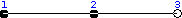
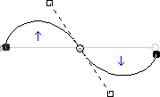

The Paths tool allows you to create complex geometric shapes called “Bézier Curves”, a bit like the Free Selection tool, but with all the adaptability of vectorial curves.
You can edit your curve, you can paint with your curve, or even save, import, and export the curve. You can also use paths to create geometrical figures. Paths have their own dialog box: the Paths Dialog.
See also the Paths concept.
Paths can be turned into Vector layers. A Vector layer is a special kind of layer that displays a path, possibly consisting of several parts, including their selected fill and stroke attributes.
There are different possibilities to activate the tool:
-
From the main menu: → .
-
By clicking the tool icon
 in the Toolbox.
in the Toolbox.
-
By pressing the B keyboard shortcut.
![[Nota]](images/note.png)
|
Nota |
|---|---|
|
The status bar at the bottom of the image window will show relevant tips about the possible modifiers you can use when working with paths. |
- Shift
-
Esta tecla tem diversas funções dependendo do seu contexto. Consulte as opções para obter mais detalhes.
- Ctrl ; Alt
-
Existem três modos disponíveis para se trabalhar com a ferramenta de vetores: Criação,Edição e Mover. A tecla Ctrl alterna entre Criação e Edição. Já as teclas Alt (ou Ctrl+Alt) alternam o modo entre Criação e Mover.
Normally, tool options are displayed in a window attached under the Toolbox as soon as you activate a tool. If they are not, you can access them from the main menu through → → which opens the option window of the selected tool.
- Modo de Edição
-
- Design
-
Por padrão, essa ferramenta já estará no modo Criação. Você pode desenhar o vetor ao dar cliques sucessivos. Você pode mover os pontos de controle clicando sobre os mesmos e arrastando. Entre os pontos de controle existem segmentos.

Os números indicam os passos para desenhar uma linha reta de dois segmentos.

Segmentos curvos são facilmente construídos ao arrastar um segmento ou clicar e arrastar em novo nó. As setas azuis mostram a curva. Duas pequenas alças quadradas ficarão disponíveis para que você possa alterar a curva.
![[Dica]](images/tip.png)
Dica To quickly close the curve, click on the initial control point. If you want to reposition the start node, hold Shift and click to deselect the end node, then move the start node.
You can use the button or
 the Path to Selection button
in the Paths dialog to convert the path to a Selection.
the Path to Selection button
in the Paths dialog to convert the path to a Selection.
Dica Quando você tem duas alças, elas vão se mover simetricamente por padrão. Solte o botão do mouse para movê-las individualmente. A tecla Shift faz com que as âncoras funcionem simetricamente novamente.
Several functions are available in Design mode:
Inserting a new node: When you press Ctrl and hover the mouse pointer over the existing path, the mouse pointer changes to the '+' sign. Clicking will create a new path node in the hovered point of the path.
Moving one or several nodes: On a node, the mouse pointer becomes a 4-arrows cross. You can click and drag it. You can select several nodes by Shift and click and move them by click and drag. Pressing Ctrl+Alt allows to move all the path, as a selection.
Modifying handles: You have to Edit a node first. A handle appears. Drag it to bend the curve. Pressing Shift toggles to symmetric handles.
Modify segment: When the mouse pointer moves over a segment, it turns to a 4-arrows cross. Click and drag it to bend the segment. As soon as you move it, handles appear at both ends of the segment. Pressing the Shift key toggles to symmetric handles.
Adding a new subpath: When you press Shift and hover the mouse pointer outside the existing path, the mouse pointer starts displaying a square. Clicking will start a subpath that isn't connected to other curves, but is considered a part of the path.
- Edit (Ctrl)
-
Edit performs functions which are not available in Design mode. With this mode, you can work only on the existing path. When the mouse pointer is not on the path, the pointer changes to a small crossed circle and you can not do any path editing.
Criar um segmento entre dois nós: Clique em um dos nós na ponta do vetor para ativá-lo. O cursor mostrará um símbolo de união. Clique em outro nó para ligar ambos os nós. Isso é muito útil quando você precisa ligar componentes que não estão fechados.
Remove a segment from a path: While pressing Shift+Ctrl key combination, point to a segment. The mouse pointer turns to a "-" sign. Click to delete the segment.
Add a node to a path: point to a segment. Pointer turns to "+"". Click where you want to place the new control point.
Remove a node: While pressing Shift+Ctrl key combination, point to a node. Pointer turns to "-"". Click to delete the node.
Adicionar uma alça à um nó: Coloque o cursor do mouse sobre um nó. O cursor mostrará um sinal de uma pequena mão. Arraste o nó para que apareça uma âncora. Pressione a tecla Shift para mudar para âncoras simétricas.
Remove a handle from a node: While pressing Shift+Ctrl key combination, point to a handle. The pointer doesn't turn to the expected "-"" and remains a hand. Click to delete the handle.
![[Cuidado]](images/caution.png)
Cuidado There is no warning before removing a node, segment or a handle.
- Move (Alt)
-
O modo Mover permite mover um ou todos os componentes de um vetor. Simplesmente clique no vetor e arraste-o.
If you have several components, only the selected one is moved. If you click and drag outside the path, all components are moved. Pressing the Shift key toggles between moving all components and selected components only.
- Poligonal
-
Com essa opção ativada, os segmentos serão apenas retos. As alças não estarão disponíveis e os segmentos não vão se dobrar quando você for movê-los.
- Selection from Path
-
This button allows creation of a selection that is based on the path in its present state. This selection is marked with the “marching ants” . Note that the path is still present: the current tool is still the path tool and you can modify this path without modifying the selection that has become independent. If you change tools, the path becomes invisible, but it persists in the Paths Dialog and you can re-activate it.
Se o vetor não estiver fechado, o GIMP irá fechá-lo com uma linha reta ligando as duas extremidades.
As the help pop-up tells, pressing Shift when clicking on the button will add the new selection to an already existing one. Pressing Ctrl will subtract the selection from the pre-existing selection, and the Shift+Ctrl key combination will intersect the two selections.
- Create New Vector Layer
-
This command creates a Vector Layer from the current path. A vector layer remembers its stroke and fill settings and can have Layer Effects applied to it.
- Enable Fill
-
When checked the current path will be filled based on the settings below.
This setting only takes effect if the path being edited is attached to a vector layer. For filling paths not connected to a layer use Fill Paths.
- Solid color
-
If this is selected, you can choose what color is used to fill the path by pressing the color button.
- Pattern
-
If this is selected, a pattern will be used to fill the path. You choose another pattern by clicking the resource button or by typing the name of the pattern.
- Anti-serrilhamento
-
Enabling this setting allows you to remove or reduce the aliasing effect that can show up on borders.
For more information, see Anti-aliasing in the Glossary.
- Enable Stroke
-
When checked the current path will be stroked based on the settings below.
This setting only takes effect if the path being edited is attached to a vector layer. For stroking paths not connected to a layer use Stroke Paths.
- Solid color
-
If this is selected, you can choose what color is used to stroke the path by pressing the color button.
- Pattern
-
If this is selected, a pattern will be used to stroke the path. You choose another pattern by clicking the resource button or by typing the name of the pattern.
This is distinct from the Dash pattern. If you select one of the two color options with no dash pattern, an unbroken line is drawn in the color set in the Toolbox. If you select Pattern with no dash pattern, an unbroken line is drawn with the pattern set in the Toolbox. If you select a line with a dash pattern, the color or pattern is still determined by the color or pattern set in the Toolbox. That is, if you have a marbled pattern set in the Toolbox, and select Pattern and dashed lines as Dash pattern, the dashes are drawn in the marbled pattern.
- Anti-serrilhamento
-
Enabling this setting allows you to remove or reduce the aliasing effect that can show up on borders.
Curved strokes or strokes drawn at an angle may look jagged or stair-stepped. The anti-aliasing option smooths them out.
For more information, see Anti-aliasing in the Glossary.
- Line width
-
You can set the width of the stroke using the text box. The default unit is pixels, but you can choose another unit with the drop-down list button.
- Cap style
-
Choose the shape of the ends of an unclosed path, which can be Butt, Round or Square.
- Join style
-
You can choose the shape of the path corners by clicking on Miter, Round or Bevel.
- Miter limit
-
When two segments of a path come together, the mitering of the corner is determined by the Miter Limit. If the strokes were wide, and no mitering were done, there would be pointed ends sticking out at the corner. The Miter Limit setting determines how the gap, formed when the outer edges of the two lines are extended, will be filled. You can set it to a value between 0.0 and 100.0, by using the slider or its + and - buttons.
- Dash pattern
-
On the pixel level, a dashed line is drawn as a series of tiny boxes. You can modify the pattern of these boxes. The black area with thin vertical lines represents the pixels of the dash. If you click on a black pixel, you remove it from the dash. If you click on a white pixel, you add it to the dash. The gray areas indicate how the pattern will be repeated when a dashed line is drawn.
- Dash preset
-
Instead of making your own dash pattern, you can choose one from the drop-down box. This pattern will then be displayed in the Dash pattern area, so you can get an idea of how it will look.

When right-clicking on path elements, like anchors or segments, a context menu will appear, the contents of which depends on the item you clicked on. The following commands may be shown in the context menu.
- Delete Anchor
-
This command deletes the selected anchor and connects the segments before and after it.
- Shift Start
-
This command shifts the start anchor to the selected anchor. The start anchor is where stroking starts. The start anchor has a pointy side indicating the stroking direction. This can be useful when you want to wrap Text along Path.
Shifting the start anchor on open strokes may insert a new segment connecting the previous endpoints, and removes the segment leading into the new start anchor.
- Insert Anchor
-
This command adds a new anchor on the selected spot on the segment.
- Delete Segment
-
This command deletes the selected segment. This will create an opening in your path.
- Reverse Stroke
-
This reverses the direction of the stroke. The shape of the start anchor will reflect the direction of the stroke. The pointy side is the direction it will go to when stroking.